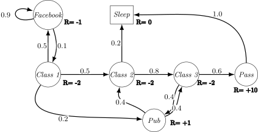

Markov Decision Processes
James Brusey
Overview
- Markov Processes
- Markov Reward Processes
- Markov Decision Processes
- Extensions to MDPs
Markov Processes
Introduction to MDPs
- Markov decision processes formally describe an environment for reinforcement learning
- Where the environment is fully observable
- i.e., the current state completely characterises the process
- Almost all RL problems can be formalised as MDPs, e.g.,
- Optimal control primarily deals with continuous MDPs
- Partially observable problems can be converted into MDPs
- Bandits are MDPs with one state
Markov Property
"The future is independent of the past given the present"
A state is Markov if and only if \[ \mathbb{P}[S_{t+1} \mid S_t] = \mathbb{P} [S_{t+1} \mid S_1, \ldots, S_t] \]
- The state captures all relevant information from the history
- Once the state is known, the history may be thrown away
- i.e., The state is a sufficient statistic of the future
State Transition Matrix
- For a Markov state and successor state, the state transition probability is defined by \[ \mathcal{P}_{ss^{\prime}}=\mathbb{P}[S_{t+1}=s^{\prime}|S_{t}=s] \]
- State transition matrix defines transition probabilities from all states to all successor states \[ \mathcal{P}=\begin{bmatrix}\mathcal{P}_{11}&...&\mathcal{P}_{1n}\\ \vdots&&&\\ \mathcal{P}_{n1}&...&\mathcal{P}_{nn}\end{bmatrix} \] where each row of the matrix sums to 1
Markov Process
- A Markov process is a memoryless random process, i.e. a sequence of random states with the Markov property
A Markov Process (or Markov Chain) is a tuple \(\langle \mathcal{S}, \mathcal{P}\rangle\)
- \(\mathcal{S}\) is a (finite) set of states
- \(\mathcal{P}\) is a state transition probability matrix, \(\mathcal{P}_{ss^{\prime}}=\mathbb{P}[S_{t+1}=s^{\prime}|S_{t}=s]\)
Example: Student Markov Chain

Example: Student Markov Chain Episodes
Sample episodes for Student Markov Chain starting from \(S_1 = C1\): \[ S_1, S_2, \ldots, S_T \]
- C1 C2 C3 Pass Sleep
- C1 FB FB C1 C2 Sleep
- C1 C2 C3 Pub C2 C3 Pass Sleep
- C1 FB FB C1 C2 C3 Pub C1 FB FB FB C1 C2 C3 Pub C2 Sleep
Example: Student Markov Chain Episodes
\[ \mathcal{P} = \begin{array}{c@{\;}c} & \begin{array}{ccccccc} C1 & C2 & C3 & \textit{Pass} & \textit{Pub} & \textit{FB} & \textit{Sleep} \end{array} \\[0.3em] \begin{array}{c} C1 \\ C2 \\ C3 \\ \textit{Pass} \\ \textit{Pub} \\ \textit{FB} \\ \textit{Sleep} \end{array} & \left( \begin{array}{ccccccc} & 0.5 & & & & 0.5 & \\ & & 0.8 & & & & 0.2 \\ & & & 0.6 & 0.4 & & \\ & & & & & & 1.0 \\ 0.2 & 0.4 & 0.4 \\ 0.1 & & & & & 0.9 & \\ & & & & & & 1.0 \end{array} \right) \end{array} \]
Markov Reward Processes
Markov Reward Processes
- A Markov reward process is a Markov chain with values
A Markov Reward Process is a tuple \((S, \mathcal{P}, \mathcal{R}, \gamma)\)
- \(S\) is a finite set of states
- \(\mathcal{P}\) is a state transition probability matrix
- \(\mathcal{R}\) is a reward function, \(\mathcal{R}_{s}=\mathbb{E}[R_{t+1}|S_{t}=s]\)
- \(\gamma\) is a discount factor, \(\gamma \in [0, 1]\)
Example: Student MRP

Return
The return \(G_t\) is the total discounted reward from time-step \(t\) \[ G_t = R_{t+1} + \gamma R_{t+2} + ... = \sum_{k=0}^{\infty} \gamma^k R_{t+k+1} \]
- The discount \(\gamma \in [0, 1]\) is the present value of future rewards
- This values immediate reward above delayed reward
- \(\gamma\) close to 0 leads to "myopic" evaluation;
- \(\gamma\) close to 1 leads to "far-sighted" evaluation
Why discount?
- Mathematically convenient to discount rewards
- Avoids infinite returns in cyclic Markov processes
- Uncertainty about the future may not be fully represented
- If the reward is financial, immediate rewards may earn more interest
- Animal/human behaviour shows preference for immediate reward
- It is sometimes possible to use undiscounted processes (i.e., \(\gamma=1\)) if all sequences terminate
Value Function
The value function gives the long-term value of state \(s\)
The state value function \(v(s)\) of an MRP is the expected return starting from state \(s\) \[ v(s) = \mathbb{E} [G_t | S_t = s] \]
Example: Student MRP Returns
Sample returns for Student MRP:
Starting from \(S_1=C1\) with \(\gamma=\frac{1}{2}\): \[ G_1 = R_2 + \gamma R_3 + \cdots + \gamma^{T-2}R_T \]
- C1 C2 C3 Pass Sleep
- \(G_1 = −2 − \frac{2}{2} - \frac{2}{4} + \frac{10}{8} = -2.25\)
- C1 FB FB C1 C2 Sleep
- \(G_1 = −2 − \frac{1}{2} - \frac{1}{4} - \frac{2}{8} - \frac{2}{16}=−3.125\)
- C1 C2 C3 Pub C2 C3 Pass Sleep
- \(G_1 = −2 − \frac{2}{2} − \frac{2}{4} + \frac{1}{8} − \frac{2}{16} - \frac{2}{32} + \frac{10}{64} \approx −3.41\)
Bellman Equation for MRPs
- The value function can be decomposed into two parts: immediate reward \(R_{t+1}\) and discounted value of successor state \(\gamma v(S_{t+1})\)
- \(v(s) = \mathbb{E} [R_{t+1} + \gamma v(S_{t+1}) | S_t = s]\)
- \(v(s) = \mathcal{R}_s + \gamma \sum_{s' \in S} \mathcal{P}_{ss'} v(s')\)
Example: Student MRP Values

For \(\gamma=1\), solving the Bellman equations gives
$$
$$
For example, \[v(C1)=-2+0.5v(C2)+0.5v(FB)\approx-12.54.\]
Bellman Equation in Matrix Form
The Bellman equation can be expressed concisely using matrices: \(v = \mathcal{R} + \gamma \mathcal{P} v\)
\begin{equation} \begin{bmatrix} v(1) \\ \vdots \\ v(n) \end{bmatrix} = \begin{bmatrix} \mathcal{R}_1 \\ \vdots \\ \mathcal{R}_n \end{bmatrix} + \gamma \begin{bmatrix} \mathcal{P}_{11} & \dots & \mathcal{P}_{1n} \\ \vdots & \ddots & \vdots \\ \mathcal{P}_{n1} & \dots & \mathcal{P}_{nn} \end{bmatrix} \begin{bmatrix} v(1) \\ \vdots \\ v(n) \end{bmatrix} \end{equation}
Solving the Bellman Equation
The Bellman equation is a linear equation and can be solved directly:
\begin{eqnarray} v & = & \mathcal{R} + \gamma \mathcal{P} v\\ (I - \gamma \mathcal{P} ) v & = & \mathcal{R} \\ v & = & (I - \gamma \mathcal{P})^{-1} \mathcal{R} \end{eqnarray}- Computational complexity is \(O(n^3)\) for \(n\) states
- Direct solution only possible for small MRPs
- Iterative methods for large MRPs:
- Dynamic programming
- Monte-Carlo evaluation
- Temporal-Difference learning
Markov Decision Processes
- An MDP is a Markov reward process with decisions
A Markov Decision Process is a tuple \(\langle S, A, \mathcal{P}, \mathcal{R}, \gamma \rangle\)
- \(S\) is a finite set of states,
- \(A\) is a finite set of actions,
- \(\mathcal{P}\) is an action-indexed collection of state transition probability matrices,
- \(\mathcal{P}_{ss'}^a = \mathbb{P} [S_{t+1} = s' | S_t = s, A_t = a]\)
- \(\mathcal{R}\) is a reward function, \(\mathcal{R}_s^a = \mathbb{E} [R_{t+1} | S_t = s, A_t = a]\)
- \(\gamma\) is a discount factor \(\gamma \in [0, 1]\)
Policies
A policy \(\pi\) is a distribution over actions given states, \(\pi(a|s) = \mathbb{P} [A_t = a | S_t = s]\)
- A policy fully defines the behaviour of an agent
- Under a stationary Markov policy, \(A_t \sim \pi(\cdot|S_t)\)
- Given a policy \(\pi\), the MDP reduces to a Markov process \(\langle S, \mathcal{P}^\pi \rangle\) and a Markov reward process \(\langle S, \mathcal{P}^\pi, \mathcal{R}^\pi, \gamma \rangle\)
Note: we restrict attention to stationary policies
Value Functions
The state-value function \(v_\pi(s)\) of an MDP is the expected return starting from state \(s\), and then following policy \(\pi\) \[v_\pi(s) = \mathbb{E}_\pi [G_t | S_t = s]\]
The action-value function \(q_\pi(s, a)\) is the expected return starting from state \(s\), taking action \(a\), and then following policy \(\pi\) \[ q_\pi(s, a) = \mathbb{E}_\pi [G_t | S_t = s, A_t = a] \]
From State Value to Action Value
Choose an action according to the policy and average its action value: \[ v_\pi(s)=\sum_{a\in A}\pi(a\mid s)q_\pi(s,a). \]
From Action Value to the Next State
Average over the reward and successor state produced by \((s,a)\): \[ q_\pi(s,a)=\mathcal{R}_s^a+\gamma\sum_{s'\in S}\mathcal{P}_{ss'}^a v_\pi(s'). \]
Bellman Expectation Equation
The state-value function can again be decomposed into immediate reward plus discounted value of successor state, \[ v_\pi(s) = \mathbb{E}_\pi [R_{t+1} + \gamma v_\pi(S_{t+1}) | S_t = s] \] The action value function can similarly be decomposed \[q_\pi(s, a) = \mathbb{E}_\pi [R_{t+1} + \gamma q_\pi(S_{t+1}, A_{t+1}) | S_t = s, A_t = a]\]
Full State-value Backup
The two one-step backups combine to give \[ v_\pi(s)=\sum_a\pi(a\mid s) \left(\mathcal{R}_s^a+\gamma \sum_{s'}\mathcal{P}_{ss'}^a v_\pi(s')\right). \]
- Policy \(\pi\) weights actions.
- Dynamics \(\mathcal{P}\) weights successor states.
- Rewards and successor values are backed up to \(s\).
Worked Student-MDP Backup
At \(C3\), compare two actions using the Student values above (\(\gamma=1\)):
$$
$$
The greedy one-step improvement therefore chooses \(\textit{study}\) at \(C3\). This is the practical meaning of backing up successor-state values into an action choice.
Optimal Value Functions
The optimal state-value function \(v_*(s)\) is the maximum value function over all policies \[v_*(s) = \max_\pi v_\pi (s)\]
The optimal action-value function \(q_*(s,a)\) is the maximum action-value function over all policies \[q_*(s,a) = \max_\pi q_\pi(s,a)\]
- The optimal value function specifies the best possible performance for the MDP
- The MDP is solved when we know what the optimal value function is
Optimal Policy
Define a partial ordering over policies
\[\pi \geq \pi ' \text{ if } v_\pi (s) \geq v_{\pi'} (s), \forall s\]
For any finite discounted (\(\gamma < 1\)) MDP,
- There exists an optimal policy \(\pi_*\) that is better than or equal to all other policies, \(\pi_* \geq \pi, \forall \pi\)
- All optimal policies achieve the optimal value function, \(v_{\pi_*} (s) = v_* (s)\)
- All optimal policies achieve the optimal action-value function, \(q_{\pi_*} (s, a) = q_* (s, a)\)
Finding an Optimal Policy
An optimal policy can be found by maximizing over \(q_*(s, a)\): \[ \pi_*(a|s) = \begin{cases} \frac{1}{m(s)} & \text{if } a \in \text{argmax}_{a' \in A} q_*(s, a') \\ 0 & \text{otherwise} \end{cases}\]
- \(m(s)=\left|\arg\max_{a'\in A}q_*(s,a')\right|\) is the number of elements in the argmax
- There is always a deterministic stationary optimal policy for a finite discounted MDP
- If we know \(q_*(s, a)\), we immediately have the optimal policy
Bellman Optimality Equation
- \(v_*(s) = \max_a q_*(s, a)\)
- \(q_*(s, a) = \mathcal{R}_s^a + \gamma \sum_{s' \in S} \mathcal{P}_{ss'}^a v_*(s')\)
- \(v_*(s) = \max_a \left( \mathcal{R}_s^a + \gamma \sum_{s' \in S} \mathcal{P}_{ss'}^a v_*(s') \right)\)
Solving the Bellman Optimality Equation
- Non-linear equation,
- No general closed-form solution
- Many iterative solution methods:
- Value Iteration
- Policy Iteration
- Q-learning
- Sarsa
Extensions to MDPs
- Infinite and continuous MDPs
- Partially observable MDPs (POMDPs)
- Average reward MDPs